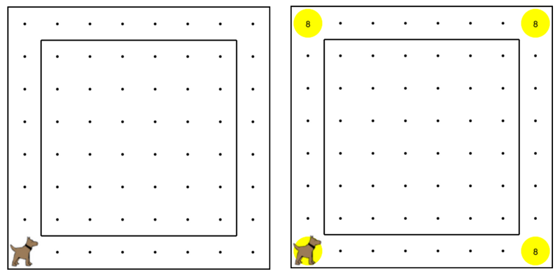

Karel's world is a racetrack, and Karel is going to run a race. Your task is
to get Karel to move around the racetrack eight times, and end up back in his
starting location. Every time Karel hits a corner, you should put a ball down,
so at the end, there are 8 balls on each corner.
卡雷爾的世界是一個賽馬場，和卡雷爾會跑一跑。你的任務是獲得卡雷爾走動賽場八次，並最終回到了他的起始位置。
每次卡雷爾擊中一個角落，你應該把一場球下來，所以在最後，有8個球上的每個角落。
This program should work on any valid racetrack. A valid racetrack is one where
the outermost border of the world is open, but there are walls one street and
one avenue in from the edges.
是開放的，但也有牆壁一條街道，一條大道從邊緣。
